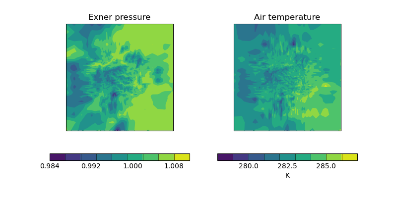

Note
Click here to download the full example code
Deriving Exner Pressure and Air Temperature¶
This example shows some processing of cubes in order to derive further related cubes; in this case the derived cubes are Exner pressure and air temperature which are calculated by combining air pressure, air potential temperature and specific humidity. Finally, the two new cubes are presented side-by-side in a plot.
import matplotlib.pyplot as plt
import matplotlib.ticker
import iris
import iris.coords as coords
import iris.iterate
import iris.plot as iplt
import iris.quickplot as qplt
def limit_colorbar_ticks(contour_object):
"""
Takes a contour object which has an associated colorbar and limits the
number of ticks on the colorbar to 4.
"""
# Under Matplotlib v1.2.x the colorbar attribute of a contour object is
# a tuple containing the colorbar and an axes object, whereas under
# Matplotlib v1.3.x it is simply the colorbar.
try:
colorbar = contour_object.colorbar[0]
except (AttributeError, TypeError):
colorbar = contour_object.colorbar
colorbar.locator = matplotlib.ticker.MaxNLocator(4)
colorbar.update_ticks()
def main():
fname = iris.sample_data_path("colpex.pp")
# The list of phenomena of interest
phenomena = ["air_potential_temperature", "air_pressure"]
# Define the constraint on standard name and model level
constraints = [
iris.Constraint(phenom, model_level_number=1) for phenom in phenomena
]
air_potential_temperature, air_pressure = iris.load_cubes(
fname, constraints
)
# Define a coordinate which represents 1000 hPa
p0 = coords.AuxCoord(1000, long_name="P0", units="hPa")
# Convert reference pressure 'p0' into the same units as 'air_pressure'
p0.convert_units(air_pressure.units)
# Calculate Exner pressure
exner_pressure = (air_pressure / p0) ** (287.05 / 1005.0)
# Set the name (the unit is scalar)
exner_pressure.rename("exner_pressure")
# Calculate air_temp
air_temperature = exner_pressure * air_potential_temperature
# Set the name (the unit is K)
air_temperature.rename("air_temperature")
# Now create an iterator which will give us lat lon slices of
# exner pressure and air temperature in the form
# (exner_slice, air_temp_slice).
lat_lon_slice_pairs = iris.iterate.izip(
exner_pressure,
air_temperature,
coords=["grid_latitude", "grid_longitude"],
)
# For the purposes of this example, we only want to demonstrate the first
# plot.
lat_lon_slice_pairs = [next(lat_lon_slice_pairs)]
plt.figure(figsize=(8, 4))
for exner_slice, air_temp_slice in lat_lon_slice_pairs:
plt.subplot(121)
cont = qplt.contourf(exner_slice)
# The default colorbar has a few too many ticks on it, causing text to
# overlap. Therefore, limit the number of ticks.
limit_colorbar_ticks(cont)
plt.subplot(122)
cont = qplt.contourf(air_temp_slice)
limit_colorbar_ticks(cont)
iplt.show()
if __name__ == "__main__":
main()
Total running time of the script: ( 0 minutes 2.741 seconds)